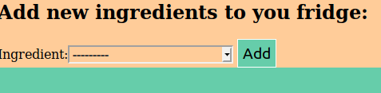
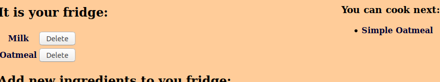

Ця програма шукає які страви ви можете приготувати. Необхідно додати продукти які є в вас в наявності і програма
поверне список став що з них можна приготувати. Дуже просто.
Покрокова інструкція
Firstly add some ingredient to you fridge. Under "Add new stock", you can pick ingredient you want and click
button "Add"

After you choose enough ingredients, for example "Oatmeal" and "Milk", system show you recipes at the right of
screen. This is all.

Registered user's fridge will be saved for the next time, so you do not need to worry about adding many
ingredients each time.